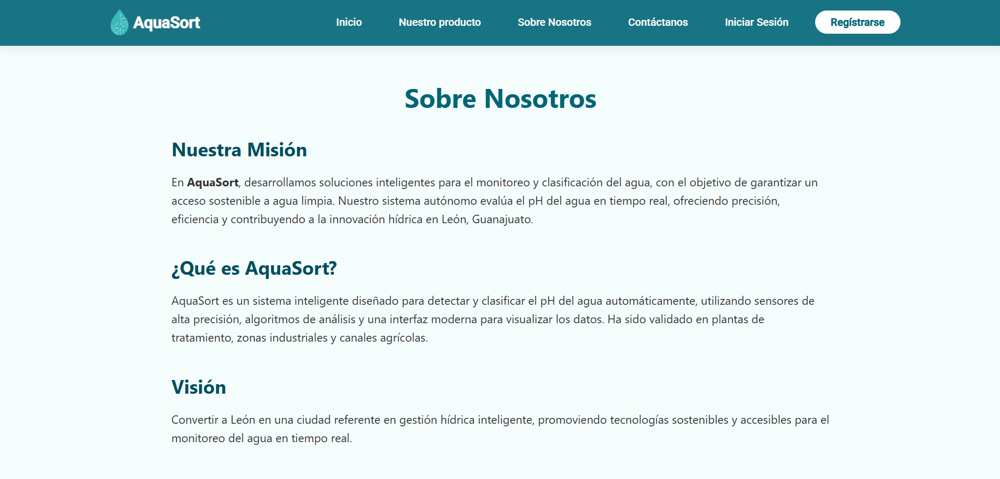

Aqua Sort
Aqua Sort es un sistema web desarrollado con .NET, Angular, Bootstrap y SQL, cuyo propósito es optimizar la gestión del recurso hídrico mediante la clasificación automatizada del agua según su nivel de pH. El sistema integra un prototipo físico con sensores para la medición en tiempo real, permitiendo al administrador gestionar inventarios, pedidos y usuarios, mientras que los clientes cuentan con una interfaz intuitiva para visualizar resultados y dar seguimiento a los registros de calidad del agua. Con esta solución, se busca reducir la contaminación hídrica, disminuir costos operativos y mejorar la toma de decisiones en procesos de tratamiento y control del agua.
Tecnologías utilizadas
- .NET para el backend
- Angular para el frontend
- Bootstrap para los estilos
- SQL para la gestión de la base de datos
Vista del Administrador
Vista del Cliente

